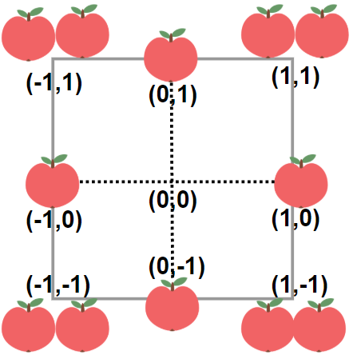

| Category | Difficulty | Likes | Dislikes |
|---|---|---|---|
| Algorithms | Medium | 403 | 98 |
amazon
In a garden represented as an infinite 2D grid, there is an apple tree planted at every integer coordinate. The apple tree planted at an integer coordinate (i, j) has |i| + |j| apples growing on it.
You will buy an axis-aligned square plot of land that is centered at (0, 0).
Given an integer neededApples, return the minimum perimeter of a plot such that at least neededApples apples are inside or on the perimeter of that plot.
The value of |x| is defined as:
x if x >= 0-x if x < 0
Example 1:

Input: neededApples = 1
Output: 8
Explanation: A square plot of side length 1 does not contain any apples.
However, a square plot of side length 2 has 12 apples inside (as depicted in the image above).
The perimeter is 2 * 4 = 8.Example 2:
Input: neededApples = 13
Output: 16Example 3:
Input: neededApples = 1000000000
Output: 5040
Constraints:
1 <= neededApples <= 1015